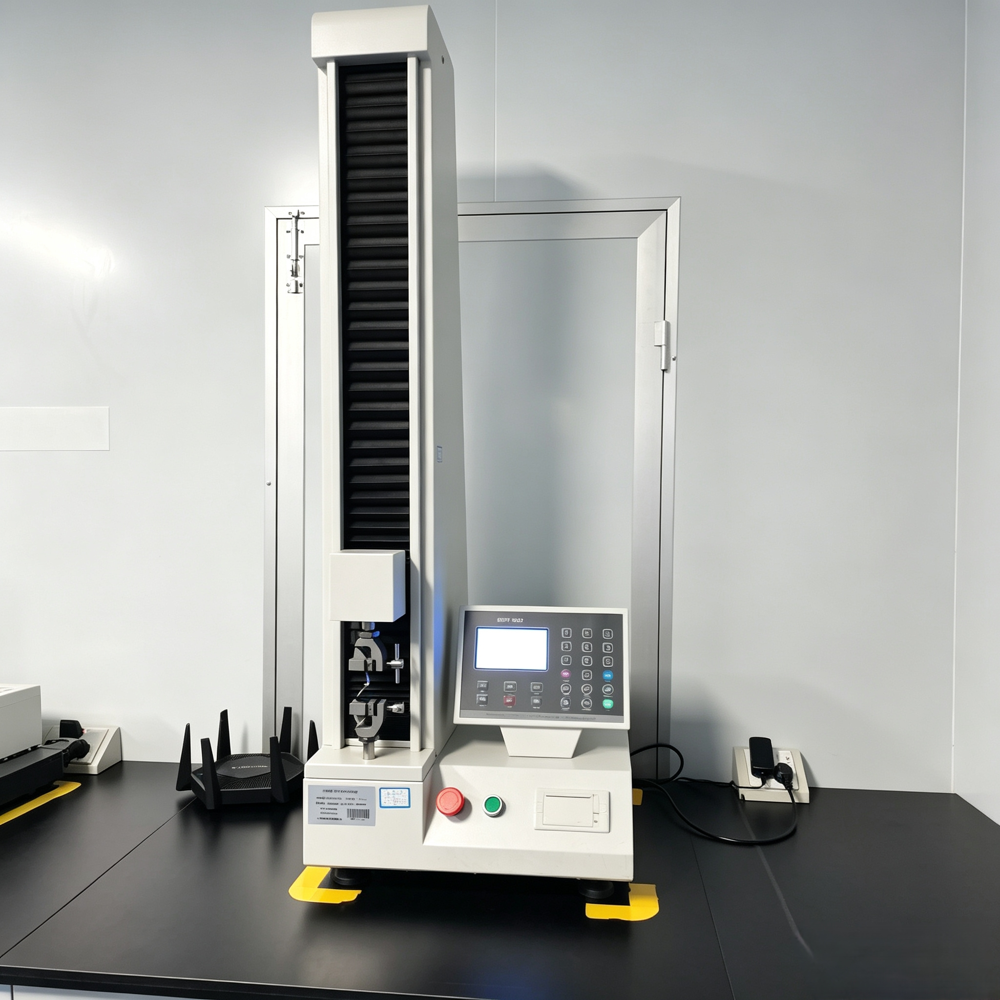

A Troubleshooting Guide for Pouch Curling and Delamination in Flexible Plastic Laminates

During the conversion and automated form-fill-seal (FFS) stages of flexible packaging, encountering physical deformities can abruptly halt production and trigger massive scrap costs. Among these issues, pouch curling and layer delamination are the two most frustrating defects for procurement managers and packaging engineers alike. When a multi-layer laminated pouch curls violently or splits apart, it compromises both shelf appeal and hermetic integrity. This engineering guide explores the technical root causes and specific processing countermeasures to eliminate these defects.
1. Root Causes and Solutions for Pouch Curling
What is Pouch Curling? Curling occurs when a finished pouch or laminated roll stock wraps upward or downward on itself rather than laying perfectly flat. This makes automated feeding into pouch-filling machinery almost impossible.
The Technical Cause (Tension Mismatch): Multi-layer flexible structures are built by bonding materials with vastly different physical properties, such as PET, BOPP, aluminum foil, and PE. If the lamination machinery exerts unequal web tension across these different plies during processing, one film layer stretching more than the other will try to snap back to its original dimension once relaxed. This residual stress manifests as a persistent curl.
Engineering Countermeasures:
- Calibrated Tension Profiles: Implement precise, automated magnetic particle brake or servo-driven tension controls that account for the exact elastic modulus of each raw film substrate.
- Thermal Management: Optimize the temperature of the lamination nip rollers. Excessive heat can cause thermal shrinkage in polyethylene (PE) layers, causing the structure to warp upon cooling.
2. Demystifying Delamination in Flexible Barriers
What is Delamination? Delamination is the physical separation of adjacent laminated plies. It is a critical packaging failure that destroys the barrier properties of the pouch, exposing internal food or medical products to destructive oxygen transmission.
The Technical Causes:
- Inadequate Adhesive Laydown: Just as wrong coating weights (g/m²) in adhesive systems cause sealing issues, insufficient lamination adhesive results in weak dry-bond structural metrics.
- Chemical Incompatibility (Ink vs. Adhesive): Certain aggressive solvent components or additives in heavy printing inks can chemically attack or migrate into the curing polyurethane adhesive, weakening the cross-linking matrix.
- Aggressive Product Fill: Ingredients with high acidities, essential oils, spices, or fatty acids can permeate the inner PE layer and chemically degrade the structural adhesive layer from the inside out.
Engineering Countermeasures: Operators must carefully verify the dry adhesive layout weight (typically maintaining a strict 1.5 to 2.5 g/m² profile for solventless laminations) and transition to specialized chemical-resistant, high-performance aliphatic or aromatic polyurethane adhesives when packaging aggressive fills.
3. The Critical Role of the Curing and Maturation Phase
A common factor behind both curling and delamination is rushed curing. Laminated rolls require dedicated processing maturation inside temperature-controlled curing chambers (typically stabilized between 40°C to 50°C for 24 to 48 hours). This controlled environment ensures that the multi-component adhesives finish cross-linking completely, setting a permanent, relaxed physical bond that mitigates structural curling tendencies before the roll stock ever encounters a slitting machine or bag-making heat jaw.
4. Manufacturing QC Tests to Prevent Field Failures
To guarantee peak quality control before shipment, a transparent packaging supplier relies on two key testing protocols:
- 180-Degree Peel Strength Test: Using a computerized tensile tester to strip apart laminate layers at a constant velocity, ensuring the mechanical bond exceeds minimum industry standards (measured in N/15mm).
- Boil/Retort Structural Testing: Subjecting packaging samples to intense localized hot water or thermal pressure cycles to verify zero moisture ingress or bubble formation between layers.
5. Partnering with a High-Precision Converter
Resolving recurring material defects requires deep conversion experience, modern multi-station lamination lines, and strict atmospheric quality controls. For high-speed lines or specific product protections—such as our specialized confectionery cold seal film alternatives and barrier pouch laminations—every micro-metric factor must be fully calibrated.
At Shenying Packing, we utilize real-time tension sensors and advanced solventless lamination arrays to deliver perfectly flat, structurally fused flexible packaging. Our facility eliminates delamination risks by meticulously engineering the entire substrate-to-ink chemistry path.
Experiencing pouch warping or barrier separating on your filling lines? Contact our technical diagnostics desk to get a professional, lab-verified sample evaluation.
Conclusion
Pouch curling and delamination are completely preventable when a flexible manufacturer treats tension control, adhesive coating metrics, and maturation phases with rigorous engineering discipline. By identifying these root anomalies early, procurement managers can secure smooth packaging operations, minimize scrap waste, and uphold absolute product freshness on store shelves.
Facing issues with pouch curling or delamination?
Our engineering team is here to help optimize your film laminates. Let's analyze your parameters:
📧 Email: may.lee@shenyingpacking.com
💬 WhatsApp: +86 13424643780